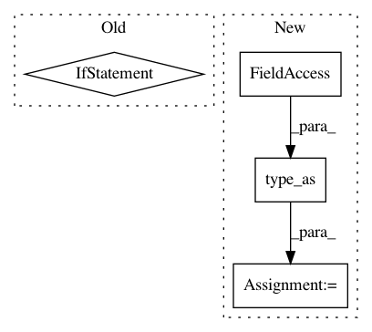

27568a7ebed1a35f08ac0390f35b3de9b8dad0dd,fairseq/models/levenshtein_transformer.py,LevenshteinTransformerModel,initialize_output_tokens,#LevenshteinTransformerModel#Any#Any#,491
Before Change
)
initial_attn = torch.empty([0])
if getattr(self.decoder.layers[-1], "need_attn", True):
initial_attn = torch.zeros([src_tokens.size(0), 2, src_tokens.size(1)]).to(
initial_output_tokens
)
return [initial_output_tokens, initial_output_scores, initial_attn, 0, 0]
class LevenshteinTransformerDecoder(TracingTransformerDecoder):
After Change
initial_output_tokens[:, 0] = self.bos
initial_output_tokens[:, 1] = self.eos
initial_output_scores = initial_output_tokens.new_zeros(
*initial_output_tokens.size()
).type_as(encoder_out.encoder_out)
return DecoderOut(
output_tokens=initial_output_tokens,
output_scores=initial_output_scores,
attn=None,
In pattern: SUPERPATTERN
Frequency: 3
Non-data size: 4
Instances
Project Name: pytorch/fairseq
Commit Name: 27568a7ebed1a35f08ac0390f35b3de9b8dad0dd
Time: 2019-11-13
Author: myleott@fb.com
File Name: fairseq/models/levenshtein_transformer.py
Class Name: LevenshteinTransformerModel
Method Name: initialize_output_tokens
Project Name: OpenNMT/OpenNMT-py
Commit Name: 625451ab74f1942eb951337554d72005076a51b3
Time: 2017-12-12
Author: dengyuntian@gmail.com
File Name: onmt/Translator.py
Class Name: Translator
Method Name: translateBatch